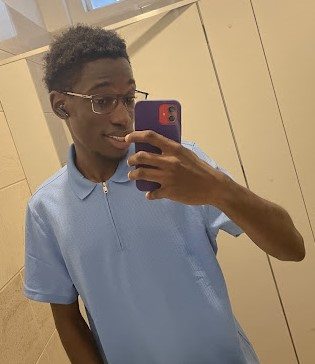

KARL BARRY OSEWE
Digital Experiences Through Code and Creativity.
I am a software developer and creative based in Nairobi, dedicated to building digital solutions that are as rhythmic and structured as the music I produce.
When I’m not behind a screen, you’ll find me on the golf course or the court—I believe the strategic discipline of golf and the fast-paced teamwork of football and basketball make me a better, more well-rounded developer.
I am eager to continue learning and growing in the tech industry, and I’m excited to see where my journey takes me.
PROFESSIONS